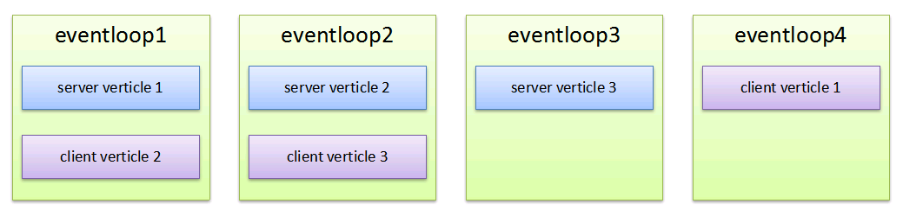

verticle-count
名称及默认值
- 1.2.0之前的版本
命名为thread-count，且默认值为1，这存在以下问题：
- 名字有歧义。ServiceComb底层基于vertx，通信层逻辑均由verticle承载，运行于eventloop线程中，并不会再创建独立的线程， 所以thread-count实际表示的是创建的verticle实例的个数，并不是线程数。
-
默认值偏小。旧版本选择了最保守的默认值，导致大部分场景都需要做这个参数的调整。
-
1.2.0及其之后的版本
重命名为verticle-count。同时允许旧的thread-count，但是会打印warning日志，提醒切换为新配置项。 默认值规则：
- 如果CPU数小于8，则取CPU数
- 如果CPU数大于等于8，则为8
Eventloop与verticle实例的关系：
假设CPU为2，则vertx默认创建 2 * CPU， 即4个Eventloop线程 假设配置server verticle count和client verticle count均为3，则他们的关系如下：

因为在Eventloop中不允许执行任何阻塞动作，再结合上图，我们可以知道，当充分利用了CPU之后，再增加verticle实例是没有意义的， 所以1.2.0之后的版本的缺省值对于多数情况是最优的配置。